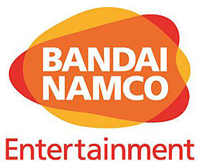

Dark Souls


https://en.wikipedia.org/wiki/-Bandai_Namco_EntertainmentDark Souls er tölvuleikur sem var gefinn út 11. Nóvermber 2011 og er fyrstur leikjanna í þriggja leikja seríu. Leikurinn fjallar aðallega um heiminn sem er að falla í myrkur eftir að eldurinn sem lýsir allt er að brenna út, en það er hægt að "bæta við á hann" með því að fórna sjálfum sér, en það getur ekki hver sem er gert það, því að til þess að komast að honum þarf sá sem ætlar að gera það að berjast í gegnum heiminn til þess að komast að eldinum og jafnvel þótt þú kemmst að eldinum þarftu samt að berjast við þann sem bætti við á hann seinast, eða þá sem eru valdir til að verja hann.
Dark Souls 2 er annar leikurinn í seríunni, hann fjallar basically um það sama og fyrsti leikurinn, en bara í öðrum heimi með öðruvísi hluti til að læra frá honum. Hann gerist langt eftir fyrsta leikinn, það er kominn nýtt land þar sem maður er, en það er hægt að finna hluti sem voru bæði mikilvægir og ekki mikilvægir í fyrsta leiknum um heim annars leiksins.
Dark Souls 3 er talinn vera seinasti leikurinn, það er að minnsta kosti ekkert verið að áætla annan Dark Souls leik. Leikurinn fjallar um sama markmið og hinir tveir, nema þetta gerist líka í allt öðrum heimi með mikið af tilvísunum að hinum tvem leikjum, því það er sagt að það er eins og tímabilið sé snúið, því það eru hús og staðir sem voru í fyrsta leiknum sem koma fram í þriðja leiknum.
From Software er fyrirtækið sem hannaði og vann að Dark Souls seríunni, þótt að það var annað lið innan fyrirtækisins sem vann á Dark Souls 2 og ég held að það sé ástæðan af hverju hann er hugsaður sem verstur af leikjunum af megninu af fólkinu sem hafa spilað alla leikina. Fyrirtækið var búið til 1. Nóvember 1986 í Japan og hefur gert marga leiki og fyrsti leikurinn þeirra var King's Field, sem var gefinn út 16 Des. 1994.
Bandai Namco er fyrirtækið sem hefur gefið út alla Dark Souls leikina sem hafa verið. Það hefur ekki alltaf verið Bandai Namco, fyrst voru þau tvö sér fyrirtæki, Bandai Co. Ltd. & Namco Ltd., en snemma um 2005 ákváðu þau að sameina fyrirtækin sín.